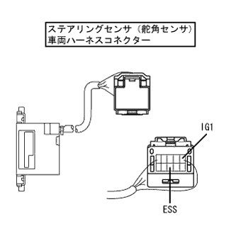

CAN Communication system (without VSC) Red angle sensor communication mode |
| Diagnostic item | Symptoms | Suspicated part |
|---|---|---|
| Red angle sensor communication mode | The 'steering angle sensor' is not displayed on the 'CAN bus connection ECU confirmation' screen of TASCAN | Steering sensor (steering angle sensor) Power/internal abnormality |
| Step 1 | Wire harness inspection (IG, ESS) |
|  |
Use SST (Toyota Electrical Tester) to inspect each terminal ← → body earth of each terminal of the steering (steering angle sensor) vehicle harness connector.
| Inspection terminal | Measurement conditions | standard |
|---|---|---|
| 5 (IG1) ← → Body Earth | IG ON | 10-14V |
| 8 (ESS) ← → Body Earth | Always | There is an conductor |
|
| ||||
| OK | ||
| ||